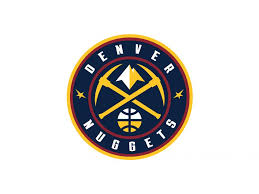
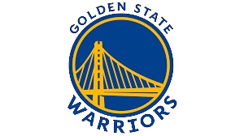
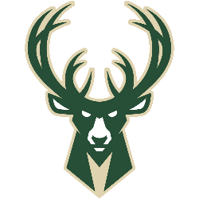
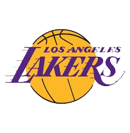

Últimos Campeões
|  |
O Denver Nuggets é um time norte-americano de basquete com sede em Denver, Colorado. Atual campeão da National Basketball Association (NBA), os Nuggets competem como membro da Divisão Noroeste da Conferência Oeste. Antes da temporada de 1948-49 da National Basketball League (NBL), o Denver Nuggets original foi fundado. Após essa temporada, a NBL fundiu-se com a Basketball Association of America (BAA), com o novo circuito unificado chamado National Basketball Association (NBA) para refletir a fusão. O Denver Nuggets jogou a temporada de 1949-50 como um dos times fundadores da NBA. Os registros e estatísticas desta franquia permanecem separados do atual Denver Nuggets. A equipe teve alguns períodos de sucesso, qualificando-se para os playoffs da ABA de todas as temporadas de 1967 até 1976, onde perderam nas finais. A equipe entrou para a NBA em 1976 após a fusão ABA-NBA e se classificou para os playoffs da NBA em nove temporadas consecutivas na década de 1980 e dez temporadas consecutivas de 2004 a 2013. No entanto, eles não faziam uma aparição nas finais da NBA desde o seu último ano na ABA, até que na temporada 2022–23 chegam nas finais e se consagram campeões pela primeira vez. Será que o Denver será capaz de surpreender os favoritos ao título da NBA? Se prepare para os próximos jogos da NBA ficando por dentro de todos os detalhes da história da franquia! |
|  |
Para começar, vamos te contar que esse não foi o primeiro nome da franquia. Ela nem sequer começou na Califórnia! O Golden State Warriors é um time de basquete dos Estados Unidos. Os Warriors competem na National Basketball Association (NBA) como membro da Divisão do Pacífico da Conferência Oeste. Fundado em 1946 na Filadélfia, o Warriors se mudou para a área da Baía de São Francisco em 1962 e tomou o nome da cidade, antes de mudar seu apelido geográfico para Golden State em 1971. O clube joga seus jogos em casa no Chase Center. O time mais dominante da NBA, campeão em quatro das últimas oito temporadas e recheado de algumas das maiores estrelas do basquete mundial. Esse é o Golden State Warriors que ganharam o campeonato inaugural da Basketball Association of America (BAA) em 1947 e venceram novamente em 1956, liderados pelo trio do Hall da Fama, Paul Arizin, Tom Gola e Neil Johnston. Em 1975, os craques Rick Barry e Jamaal Wilkes levaram os Warriors ao seu terceiro título. Liderada por Stephen Curry, Klay Thompson e Draymond Green, a dinastia dos Warriors viu a equipe conquistar quatro títulos em oito temporadas, além de chegar a cinco finais consecutivas de 2015 a 2019 (seis finais em oito anos); Curry, Green, Thompson e Andre Iguodala estavam em todos os quatro times do século 21. A equipe da Califórnia contou com a chegada de mais um talento Kevin Durant, para vencer e se tornar um dos melhores times dos últimos anos. Será que o Golden State será capaz de surpreender os outros favoritos ao título da NBA? Se prepare para os próximos jogos da NBA ficando por dentro de todos os detalhes da história da franquia! |
|  |
O Milwaukee Bucks é um time de basquete sediado em Milwaukee. Os Bucks competem na National Basketball Association (NBA) como membros da Divisão Central da Conferência Leste. A equipe foi fundada em 1968 como uma equipe de expansão. Os Bucks ganharam dois títulos da liga (1971, 2021), três títulos da conferência (1971, 1974 e 2021) e 18 títulos da divisão (1971-1974, 1976, 1980-1986, 2001, 2019, 2020, 2021, 2022 e 2023). Eles apresentaram jogadores notáveis como Giannis Antetokounmpo, Kareem Abdul-Jabbar, Sidney Moncrief, Oscar Robertson, Bob Dandridge, Bob Lanier, Glenn Robinson, Ray Allen, Sam Cassell, Junior Bridgeman, Michael Redd, Terry Cummings, Vin Baker, Jon McGlocklin e Marques Johnson. O ex-senador norte-americano, Herb Kohl, era o proprietário da equipe, mas em 16 de abril de 2014, um grupo liderado pelos gerentes bilionários, Wes Edens e Marc Lasry, concordaram em comprar uma participação majoritária na equipe, uma venda que foi aprovada pelos proprietários da NBA e seu Conselho de Governadores um mês depois. A equipe é gerenciada por Jon Horst, ex-diretor de operações de basquete da equipe, que assumiu o cargo de John Hammond em maio de 2017. Em 2014, a sorte dos Bucks mudou quando contrataram o futuro MVP da liga, Giannis Antetokounmpo no draft. Giannis, conhecido como “The Greek Freak”, se tornou uma força dominante na NBA e liderou os Bucks de volta à elite da liga. A equipe alcançou seu segundo título da NBA em 2021, com o atleta brilhando como peça central do sucesso. Será que o Bucks será capaz de surpreender os favoritos ao título da NBA? Se prepare para os próximos jogos a NBA ficando por dentro de todos os detalhes da história da franquia! |
|  |
Los Angeles Lakers com sede em Los Angeles, Califórnia. A equipe foi fundada em 1947, em Minneapolis, após Morris Chalfen e Ben Berger comprarem a franquia por 15 mil dólares onde recebeu seu nome em alusão ao fato do estado de Minnesota ser conhecido como "Terra dos Mil Lagos" e venceu cinco títulos da liga antes de uma queda de público presente levar a uma relocação para Los Angeles em 1960. No fim dos anos 1970 e no começo dos anos 1980, a popularidade do Lakers cresceu, tornando-se uma das franquias de maior sucesso, além de ser a com maior número de títulos, 17, empatado com o Boston Celtics. A equipe ainda conta com 56 aparições na pós-temporada, 33 títulos da Divisão do Pacífico, 32 títulos da Conferência Oeste e 1 título da copa da NBA. A franquia californiana é detentora de alguns recordes da Liga. É a que possui maior número de vitórias da liga, mais de 3000, com a maior porcentagem de vitórias e mais aparições em finais (32). O Lakers também é o time das ligas norte-americanas que mais teve vitórias consecutivas (33), na temporada 1971-72. O Lakers é uma das franquias mais populares da NBA, e já teve em seu elenco grandes estrelas do basquetebol mundial como George Mikan, Slater Martin, Jerry West, Wilt Chamberlain, Elgin Baylor, Gail Goodrich, Kareem Abdul-Jabbar, Magic Johnson, James Worthy, Shaquille O'Neal, Kobe Bryant, Anthony Davis e LeBron James, além de grandes técnicos como John Kundla, Bill Sharman, Pat Riley, Frank Vogel e Phil Jackson. Financeiramente, os Lakers são a franquia mais valiosa da NBA (e a décima nos esportes nos Estados Unidos), sendo avaliada em US$ 6,4 bilhões de dólares. Recentemente, na temporada 2018/2019, com o objetivo de encerrar o jejum de títulos na NBA, o Los Angeles Lakers contratou a estrela LeBron James. Após batalhar bastante durante a competição, em 2019/20 o astro norte-americano ajudou a equipe a vencer o torneio. Será que o Lakers será capaz de surpreender os outros favoritos ao título da NBA? Se prepare para os próximos jogos da NBA ficando por dentro de todos os detalhes da história da franquia! |